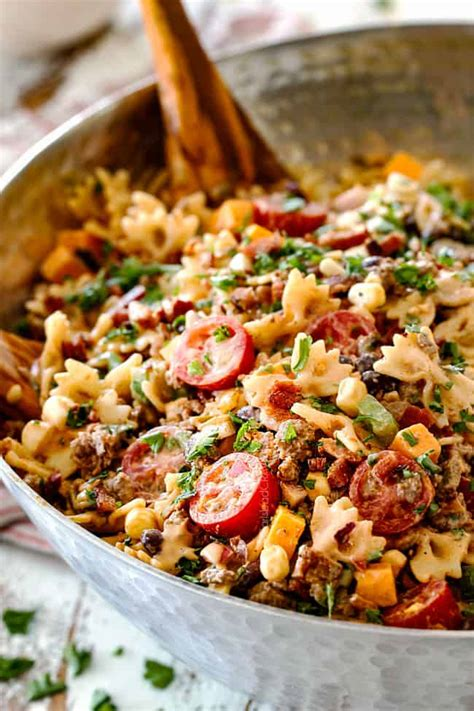

Cowboy Pasta Salad

Ingredients:
-
3 lb pasta, mini farfalle or shells
-
1 lb ground beef
-
2 tbsp banana peppers, pickled
-
1 tsp chili powder
-
1 tsp cumin, ground
-
3/4 tsp garlic powder
-
3/4 tsp onion powder
-
3/4 tsp salt
-
4-6 tbsp canned jalapeno peppers, diced
-
1 bell pepper, small dice
-
1 can black beans, rinsed and drained
-
1 can corn
-
1 pint cherry tomatoes, halved
-
1 cup cheddar cheese, cubed
-
1 red onion, small dice
-
2 tbsp cilantro, chopped
-
1/2 lb bacon, thick center cut, cooked and chopped
Dressing:
-
1/3 cup ketchup
-
1/3 cup mayonnaise
-
1/3 cup sour cream (or plain Greek yogurt)
-
1/4 cup salsa
-
1 1/2 tbsp brown sugar
-
1 tbsp Worcestershire sauce
-
1 tbsp yellow mustard
-
1 tbsp apple cider vinegar
-
1/4 tsp EACH paprika, salt, pepper
Instructions:
- Whisk all the dressing ingredients together. Set aside.
- Cook pasta until al dente. Rinse with cold water and drain. Add to large bowl and toss with HALF the dressing.
- Brown meat in a skillet. Drain off excess grease. Stir in chiles and all the spices. Transfer to a plate to cool.
- Once meat is cooled, add all ingredients to bowl with the remaining dressing and mix well.
- Add hot sauce for spicier, apple cider vinegar for tangier, brown sugar for less tangy if desired.
Back to Recipes